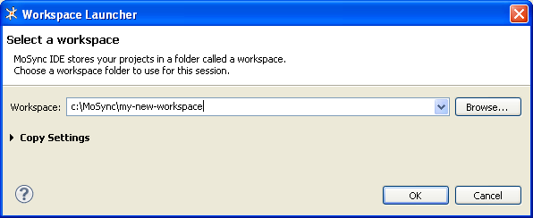

Workspaces are useful for organizing projects. For example you can use them to working with different versions of projects, or as sandboxes. Here we describe how to create workspaces and switch between them.
From the File menu, select Switch Workspace > Other.
The Workspace Launcher will open:

In the Workspace box, enter a name for your new workspace. Workspace names cannot include spaces — only alphanumeric characters (a-z, A-Z, 0-9) and the underscore character (_).
Click OK.
MoSync will restart with the new workspace loaded. (If the Welcome page opens, just close it.)
To add projects to your new workspace, see Importing Projects and Files.
To switch between your workspaces, select Switch Workspace from the File menu.
If you have already used the other workspace in this session, you can choose it directly from the pop-up menu. Otherwise, select Other to open the Workspace Launcher and browse for you workspace from there.
In the Workspace Launcher you have the option to copy the current workbench layout and working sets from the current workspace to the new one.